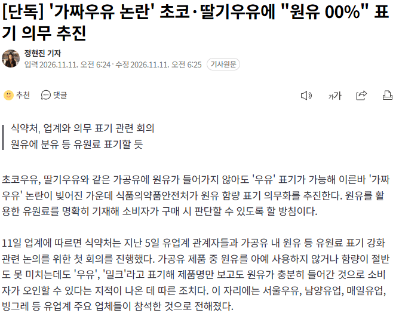

디시인이 큰거했다 ㅋㅋ

디시인이 큰거했다 ㅋㅋ
긁어 부스럼이지 뭐 ㅋㅋ
애초에 즈그들이 존나 당당한 부분도 아니였는데 광역어그로를 끈게 존나 신기함
초코물(우유첨가)
분유 첨가
ㄹㅇ 차라리 초코 물이라고 싸게팔면 존나 많리 먹을텐데
한국 기업새끼들이 그럼 그렇지~~ 하고 넘어갈 일을 굳이 고소해서 커지게 만들었음ㅋㅋ
??? : 그래.. .이거면 된거야..
이건 진짜 좋다 얼마전에 편의점 990원 초코우유 호기심에 사봤는데 한모금 마시고 바로 다버림
다른 편의점 1800원 초코우유는 진하고 맛있는데 ㅅㅂ
가격이 두배잖니?
양도 더많음 1800원짜린 500미리고 990원은 작음
가격이 두배니까!
아 예 알겠습니다
나도 진지하게 다 못먹고 버렸음 너무 맛이없어서
웬만한 가공우유는 다 좋다고 퍼먹는데 진짜 못먹겠더라
1800원이 500미리고 990원은 300미리니까 용량대비 가격 차이는 10% 남짓인데 맛 차이는 진짜 심각했음
요즘 우리나라 과자들 양줄고, 성분 줄고.. 뭔가 맛이 예전같지가 않아서 진짜 순수령같은 제도좀 도입했으면 좋겠다 ㅜㅜ
서울우유도 고소 안했으면 걍 묻힌건데 다 함께 큰 업적 이뤘네
디시인이 스파크를 일으켰고
그 기업이 불쏘시개 역할을 해줌ㅋ
단지 바나나 우유만 마신다
븅신들 진짜 소비자 좆으로보는것도 적당히 해야지 이렇게까지 해서 일을 키우는것도 재능이다 씹새끼들ㅋㅋㅋㅋㅋㅋㅋ
서울우유 자폭 제대로 했네 ㅋㅋㅋㅋ
제목 순간 잘못읽어서 "뭐 이제 원유 0%라고?" 거리면서 놀랬네 ;;

00% 의무표기 하게 하는게 아니라 원유가 최소 얼만큼 이상 안들어있으면 우유를 못붙이게 해야함 ㅅㅂ
딸기우유 무조건 저기꺼 먹었는데 대실망
언젠가부터 과자, 음료수 다 설탕맛이나 텁텁한 맛 나서 안 먹음
걍 트레이더스에서 음식 사먹는게 가성비 갑임
부랴부랴 원유함량 늘리는중인 정제수가 제일 앞에있던 제품들은 개추~
병신들 ㅋㅋㅋ
우유향 첨가
이런거 해줘야 소비자들이 더 안심하고 먹지
초코분말 정제수 (카카오 향료 및 탈지분유 첨가)
요즘 덴마크 우유 개맛없던이유가 이거라며?
우유가 안들어갔는데 우유라는 이름을 쓸수가있음??
우리나라는 가짜초코에도 초코라고 붙이는게 가능
CU편의점에 드물게 들어오는 PBICK 이라는 자체PB브랜드의 초코우유 500ml가 있는데 이거 원유 79%임
다른 카카오나 캐릭터콜라보 500ml 우유들 원유 10% 20% 이지랄할때 이새끼만 원유 79퍼다 존나맛있음 꼭먹어라
존나잘팔리면 원가이슈로 생산중단될까봐 나만 조용히 몇달 꿀통빨고있다가 식이조절하고 안먹은지 꽤 되었는데 이제 푼다
없으면 가까운편의점 점주분 계실때 꼭 사간다고 발주요청해라
이게 초코'우유' 지 개씨발놈들 어디서 탈지분유나 좆같은거 타거나 원유 10% 20% 쳐넣은 유사우유새끼들이 사칭을 쳐하냐
우유맛좋아하면 이거미만잡 허쉬고 초코에몽이고 다 나가 뒤져라
찾아보니 온라인몰에도 검색은되는데 가격이 더 비싸다 그냥 CU가서 한번쯤 꼭먹어봐라진짜 후회안한다 아 그 외국 초코우유 리뷰어새끼가 이거 출시하고 나서 한국을 방문했어야되는데 이거먹었으면 추천0순위로박고 갓뎀알러뷰코리안쵸코미역수퍼그레이트 이지랄했을걸
아맞다 이거 딸기우유랑 바나나우유 버전도 나오는데 마찬가지로 원유함량 뒤진다 괜찮다
그냥 라인업자체가 존나 완벽함
서울우유가 소비자의 비판 고소해서 큰일 해냈네 ㅋㅋㅋㅋㅋㅋㅋㅋㅋ
원유가 70%이상 안넘는건 우유 이름 때고 팔아라
커피맛 우유부산물 합성음료
고소해서 더 일이 커져버렸죠? ㅋㅋ
온 세상이 빽선생님이다
스트라이샌드 효과 ㅋㅋㅋ
내용 정리된거 있음? 처음보는데
초코애몽도 원유 줄이고 맛없어져서 매출 많이 줄지 않았나?
장난질 4번 햇을걸 ㅋㅋ
우유에 물타기 vs 물에 우유타기 ㅋㅋㅋ
나백프로 체세포수 좆같은 소리 이제 안들어도되냐
진정한 초코 물은 허쉬다 원유가 없다
덕분에 다른 우유도 맛보는중
나이스 ㅋㅋ
국산 가장 싼 멸균우유가 1리터당 2천원인데 수입 멸균우유 1500원임. 심지어 폴란드는 자연방목 우유다.
https://item.gmarket.co.kr/Item?goodscode=3826035774
https://smartstore.naver.com/plan-2/products/12275662307
팩째 전기밥솥에 4개 넣고 6시간 이상 두면 요거트 됨. https://www.dogdrip.net/733254166
사실 디시 뻘글로 넘어갔으면 별 관심도 없었을텐데
괜히 고소를 쳐해서 뉴스까지 타게 만들고 ㅋㅋ